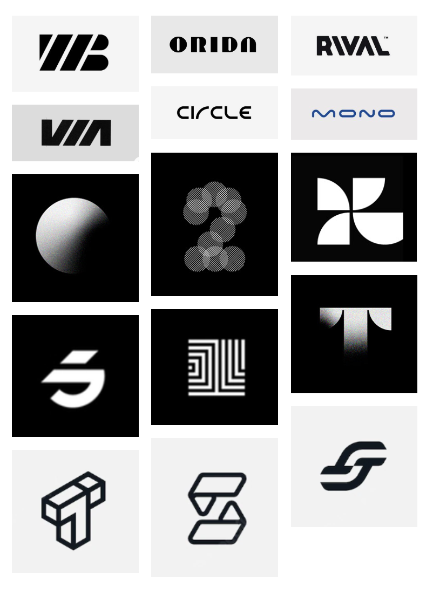

WILDROCK
Built around how you live.
We listen first, then design with precision: a home shaped around the life it holds.
A · Jost 500 + Newsreader Light ItalicJost
Identity · 03 Inspiration
Tone: timeless, quiet, exclusive, steady. Avoid: house icons, rustic or Western cliché, thin or intricate, cold corporate.
01 · References
Studios, places, marks, type and photography that hold one or more of the three traits. Each card opens the source. Full notes are in references.md.
02 · Colour
The form is set in one colour first. These palettes come after: mostly neutral, with one landscape accent each.
The most restrained option. Charcoal on limestone, with sage held back for small moments.
#22211F#55524C#A39E94#E7E2D9#7F8B78Warmer and more human. Cedar and oak bring craft, and sage ties it to the forest edge.
#2E2B26#8A6A4F#C9AE8C#EFE8DC#6E7B67High-desert light after sunset. Sandstone and clay over a cool dusk charcoal, for a sense of place.
#2A2730#6E5B5A#B88A72#D9C3B0#F3ECE403 · Type
A sans that can carry the wordmark at yard-sign distance and as a favicon, with an optional serif for the studio's editorial voice.
WILDROCK
Built around how you live.
We listen first, then design with precision: a home shaped around the life it holds.
WILDROCK
Built around how you live.
We listen first, then design with precision: a home shaped around the life it holds.
WILDROCK
Built around how you live.
We listen first, then design with precision: a home shaped around the life it holds.
WILDROCK
Built around how you live.
We listen first, then design with precision: a home shaped around the life it holds.
04 · Texture
Secondary graphics for site, print and signage. All are drawn as inline SVG, in one colour, with strokes heavy enough to survive reproduction.
05 · Style direction
From the HMW style samples, keep the heavy, solid, one-colour forms with angled cuts. Leave the gradients, halftones and outline-only marks.
